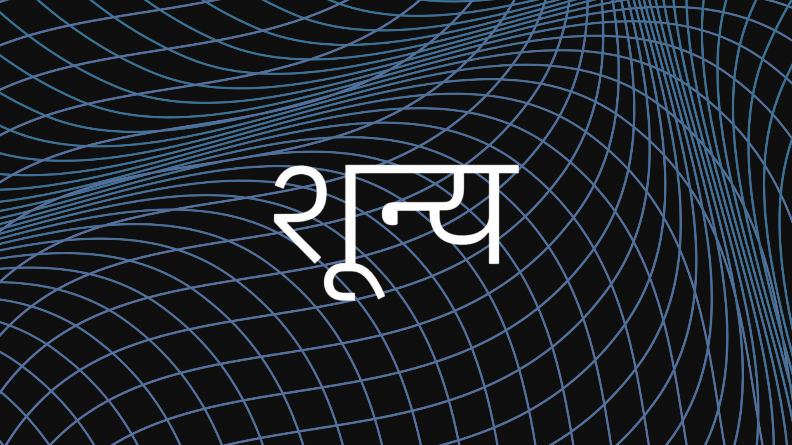
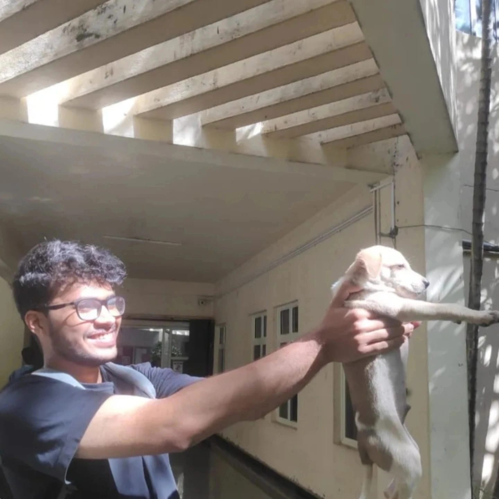
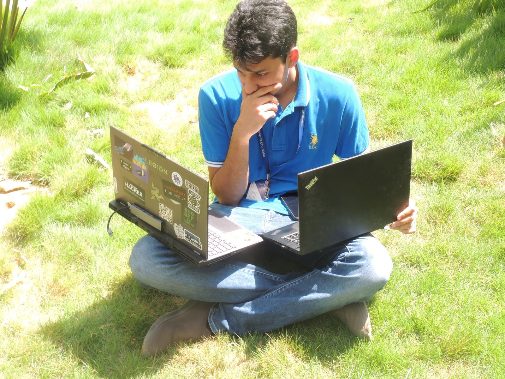

Intelligence that will eat the world.

Who we are
We are a student-led research lab based in India, dedicated to advancing the interdisciplinary study of embodied intelligence through integrated frameworks spanning robotics, world modeling, neuroscience, and philosophy of mind.
We believe AI is fundamentally a problem about how minds work—drawing from neuroscience, cognitive psychology, and philosophy—rather than just statistical optimization. While this approach is different from mainstream AI research, we think it's the path to genuine intelligence.
Research in Progress
Embodied Intelligence & World Models
Embodied intelligence is studied through agents that learn predictive models of their environments from interaction. The emphasis is on acquiring compact world models from sensory streams such as vision, action, and proprioception, and using these models for planning and control without dense rewards or environment-specific tuning.
Experiments are conducted primarily in simulated and game-based environments, with an emphasis on understanding which learned representations support generalization and long-horizon reasoning.
Status: Prototypes and exploratory experiments
Verifiable "Thinking" in Language Models
Language models are examined through the lens of formal systems such as logic, type theory, and program semantics. This direction investigates how symbolic structure can be integrated with learned representations to produce reasoning that is internally consistent and mechanically verifiable.
The motivation is the development of language-based systems whose outputs can be checked and audited, particularly in scientific and safety-critical contexts.
Status: Prototypes and exploratory experiments
Meet the team

Sachit Ramesha Gowda
Computer Vision and Neuroscience
Mihir Arya
Natural Language Processing and Multimodal Reasoning

Dhruv Patankar
Reinforcement Learning and Information Theory
Interested in Supporting Us?
Consider donating to our research initiatives: